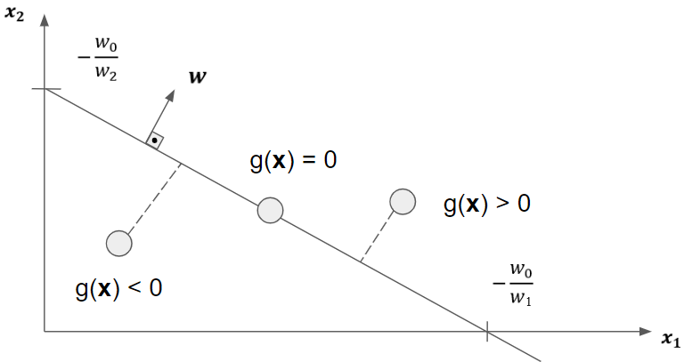

Capítulo 2: Classificadores lineares#
Os classificadores lineares compartilham o conceito de separação entre classes através de funções discriminantes expressas como combinação linear entre coeficientes (pesos) e as características dos padrões. A determinação desses coeficientes segundo cada método encontrado na literatura segue um processo particularm porém com o objetivo final de alcançar a melhor configuração possível. Cabe destacar que parte dos métodos lineares abordados aqui abrem caminho para a formalização de determinados métodos não lineares.
Classificadores e problemas lineares#
Da forma mais simplista possível, podemos definir que um classificador é linear desde que o processo de discriminação das classes abrangidas pelo problema seja conduzida através de superfícies de decisão lineares. Uma superfície de decisão linear consiste no lugar geométrico que torna nula uma função discriminante linear. Geralemente, uma função linear é dada por:
\(\begin{equation} g(\textbf{x})=\textbf{w}^{T}\textbf{x} + 𝜔_{0} \tag{2.1} \end{equation}\)
em que \(\textbf{x}\), \(\textbf{w} \in \chi ⊆ \mathbb{R}^{n} \) e \(𝜔_{0} \in \mathbb{R}\). Cabe observar que a expansão de \(\textbf{w}^{T}\textbf{x} + 𝜔_{0}\) gera uma combinação linear, e ainda, \(\textbf{w}^{T}\textbf{x}\) corresponde ao produto interno entre \(\textbf{w}\) e \(\textbf{x}^{1}\).
A fim de exibir determinadas características e relações relevantes a respeito das superfícies de decisão geradas por \(g(\textbf{x})\), vamos considerar \(\mathbb{R}^{2}\) como espaço de atributos. Por sua vez, com o intuito de reforçar o entendimento, a Figura 2.1 apoia esta discussão.
Como mencionado, a superfície de decisão corresponde a um subconjunto de vetores \(\textbf{x}\) no espaço de atributos que torna \(g(\textbf{x})=0\). Ao tomar \(\textbf{x}_{1}\) e \(\textbf{x}_{2}\) sobre a superfície de decisão, verificamos que:
\(\begin{equation} \textbf{w}^{T}\textbf{x} + 𝜔_{0} = \textbf{w}^{T}\textbf{x}_{2} + 𝜔_{0} \Leftrightarrow \textbf{w}^{T}(\textbf{x}_{1}-\textbf{x}_{2})=0 \end{equation}\)
levando a concluir que \(\textbf{w}\) é ortogonal à superfície de decisão linear, pois \(\textbf{x}_{1}-\textbf{x}_{2}\) pode ser admitindo como um vetor que determina a superfície de decisão (neste caso, uma reta), e a ortogonalidade mencionada decorre do produto interno nulo entre \(\textbf{w}\) e o vetor \(\textbf{x}_{1}-\textbf{x}_{2}\).
Considerando agora outros dois vetores \(\textbf{x}_{3}=(x_{31},0)\) e \(\textbf{x}_{4}=(0,x_{42})\) que também ocupam a superfície de decisão, salvo detalhe que \(\textbf{x}_{3}\) e \(\textbf{x}_{4}\) interceptam o primeiro e segundo eixo do espaço de atributos, respectivamente. Com isso:
\(\begin{equation} g(\textbf{x}_{3})=\textbf{w}^{T}\textbf{x}_{3} + 𝜔_{0} = 0 \Rightarrow 𝜔_{1}x_{31} + 𝜔_{2}0 + 𝜔_{0} = x_{31} = -\frac{𝜔_{0}}{𝜔_{1}} \end{equation}\)
\(\begin{equation} g(\textbf{x}_{3})=\textbf{w}^{T}\textbf{x}_{4} + 𝜔_{0} = 0 \Rightarrow 𝜔_{1}0 + 𝜔_{2}x_{42} + 𝜔_{0} = x_{42} = -\frac{𝜔_{0}}{𝜔_{2}} \end{equation}\)
Esse resultado nos permite concluir que a distância entre a superfície de decisão e a origem do espaço de atributos equivale a \(\frac{|𝜔_{0}|}{||\textbf{w}||}\). Ainda, com base no mesmo conceito de distância entre ponto e reta, podemos concluir que o módulo de \(g(\textbf{x})\) expressa a distância entre \(\textbf{x}\) e a superfície de decisão.
Além da noção de distância entre os padrões/vetores e a superfície de decisão, é de extrema importância o valor do retorno gerado pela função discriminante. Ao tomar um \(\textbf{x}\) qualquer, tal que \(g(\textbf{x}) > 0\), podemos concluir que tal vetor está afastado da superfície \(g(\textbf{x})=0\) no mesmo sentido do vetor \(\textbf{w}\). De forme similar, \(g(\textbf{x}) < 0\) indica que o vetor ortogonal à superfície de decisão com extremidade em \(\textbf{x}\) possui sentido oposto a \(\textbf{w}\). Esta observação a respeito do sinal de \(g(\textbf{x})\) caracteriza a regra de decisão de um classificador linear, usualmente expressa por:
\(\begin{equation} g(\textbf{x})=\textbf{w}^{T}\textbf{x} + 𝜔_{0} \left \{ \begin{matrix} >0 ⇒ \textbf{x} \in 𝜔_{1} \\ < 0 ⇒ \textbf{x} \in 𝜔_{2} \end{matrix} \right. \tag{2.2} \end{equation}\)
De acordo com a equação acima, verifica-se que um classificador linear possibilita a distinção entre duas classes somente. A aplicabilidade desta abordagem em problemas de classificação que abrangem mais de duas classes exige o uso de estratégias, as quais serão introduzidas mais adiante.
Nesta breve introdução sobre classificadores lineares, podemos notar a grande diferença conceitual existente entre esta abordagem e as regras de classifiação baseadas na Teoria da Decisão de Bayes. A simplicidade conceitual e maior facilidade no tratamento computacional tornam atrativos os classificadores lineares.
Antes de prosseguir os estudos sobre os classificadores lineares, é importante destacarmos a diferença entre classificadores lineares e problemas linearmente separáveis. Conforme já definido, os classificadores lineares são estruturados segundo funções discriminantes com forma equivalente à apresentada na Equação 2.1. Por outro lado, um problema de classificação é linearmente separável desde que seja possível obter, ao menos, uma superfície de decisão linear que distinguia dois tipos de objetos cujas classes sejam conhecidas de antemão (Figura 2.2). Isso nos permite concluir que a capacidade de separação através de uma superfície linear é uma propriedade dos dados a serem classificados e não do classificador em si.
